Research
Part I. Distributed Control, Optimization, and Learning of Multi-Agent Systems
1. Distributed Cooperative Control
Swarm intelligence draws inspiration from nature, spanning biological group behaviors such as foraging, flocking, and swarming, social phenomena like networks and markets, and engineering applications including UAV formation, collaborative perception, and autonomous driving. This field has twice been listed among Science's 125 questions. In distributed cooperative control, we study how individual dynamics and network topology affect group consensus behavior, and design event-triggered, impulsive, and sampled-data control protocols to overcome communication constraints, while addressing security risks such as DoS attacks and deception attacks.
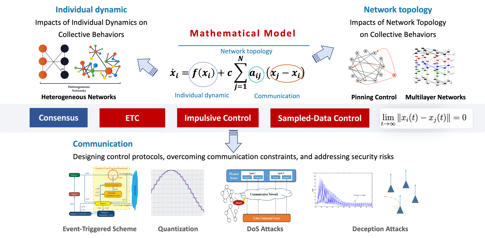
Distributed Cooperative Control
2. Distributed Collaborative Optimization
With the increasing scale of data and the decentralization of computing devices, distributed algorithms have become an important approach for large-scale optimization and learning tasks. In distributed optimization, for communication-constrained settings such as large-scale peer-to-peer energy trading and underwater robotic systems, we propose event-triggered quantized distributed optimization and event-triggered differentially private optimization algorithms, achieving linear convergence while greatly reducing communication frequency and data volume. To address gradient leakage risks arising from explicit information exchange, we propose differentially private optimization algorithms under unbalanced graphs and robust gradient-tracking algorithms under global set constraints, achieving linear convergence while balancing privacy protection with decision accuracy.
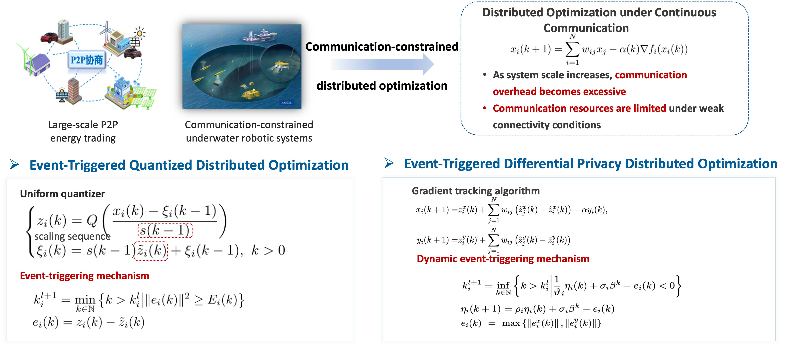
Communication-Efficient Distributed Optimization
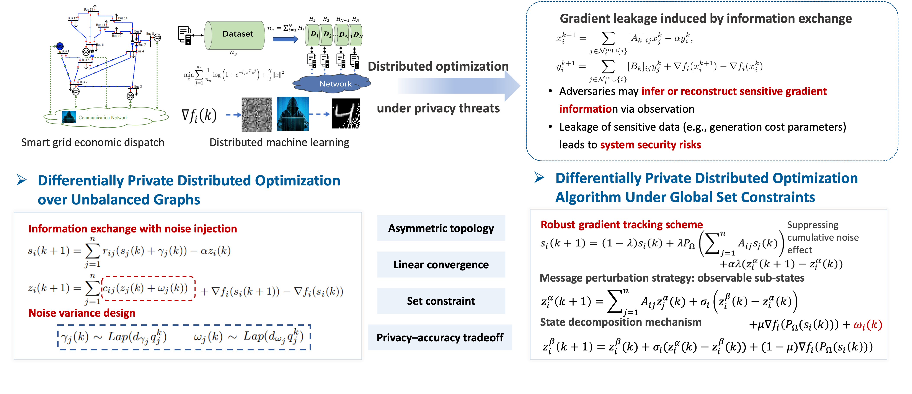
Privacy-Preserving Distributed Optimization
3. Distributed Noncooperative Decision
In many practical scenarios, multiple agents do not always share the same objective. Instead, they may have conflicting interests, such as in market competition. Therefore, non-cooperative game theory is introduced to model the interactions among decision-makers. Each agent updates its strategy based on local information, and the system eventually converges to a Nash equilibrium. For multi-agent systems composed of noncooperative players, when individual utilities further depend on the aggregate behaviors of all agents, the problem evolves into aggregative games. To address information leakage caused by aggregate-term interactions, we propose differentially private aggregative game algorithms over unbalanced directed graphs, achieving linear convergence rates. For games with multiple equilibria and under uncertainty, we propose a bi-level fastest mixed-descent algorithm for optimal generalized Nash equilibrium selection and a distributed optimal robust equilibrium seeking algorithm, overcoming convergence difficulties in weakly monotone games. To address the heavy projection computation and unknown gradient information in dynamic environments, we propose a projection-free online game algorithm under bandit feedback and a distributed online learning algorithm incorporating predictive information, enabling computationally efficient and risk-aware decision-making in dynamic environments.
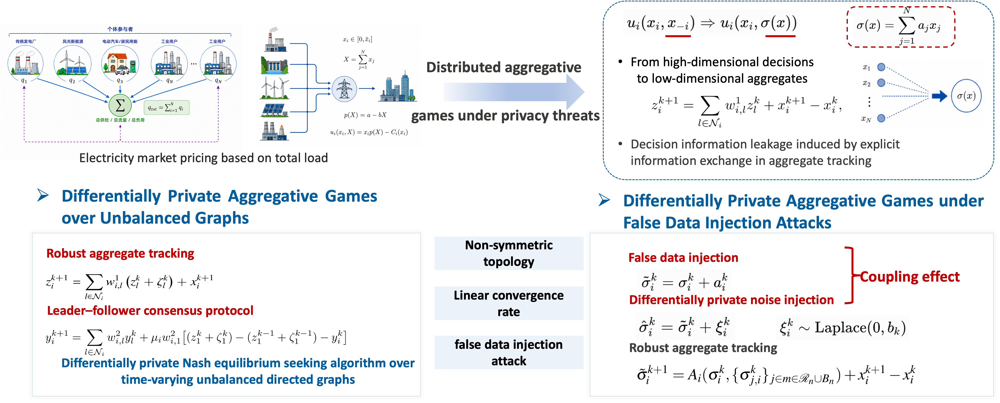
Differentially Private Distributed Aggregative Games
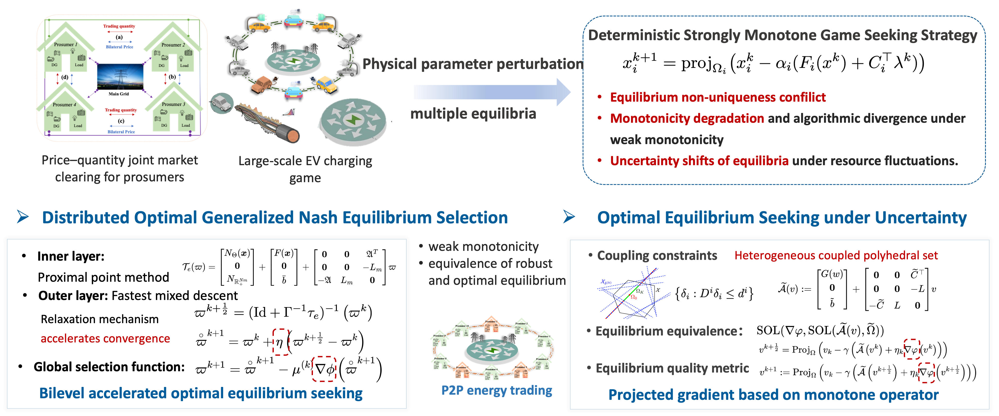
Robust Games and Optimal Equilibrium Selection
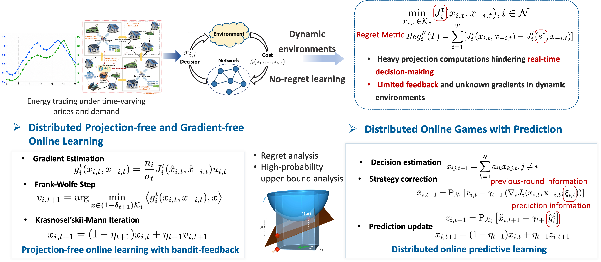
Online Games in Dynamic Environments
Part II. Electricity-Hydrogen Coupled Energy System
With large-scale renewable energy integration, energy systems are shifting from the traditional "load-follows-source" paradigm to a new "source-load-storage collaborative interaction". Systems are evolving from centralized to distributed, and from large-scale to ultra-large-scale. We adopt distributed cooperative control, optimization, and learning methods to enable intelligent regulation of the electricity-hydrogen integrated energy system. Our research focuses on three key challenges in intelligent optimal dispatch for hydrogen-electricity coupled energy systems: multi-scale modelling, scheduling under uncertainty, and hierarchical trading. We aim to bridge the chain of bottom-layer models, intra-domain scheduling and cross-domain trading, ensure economic and stable operation of the system.
1. Multi-Scale Modeling of Industrial-Scale Electrolyzer Cluster
A large-scale heterogeneous electrolyzer cluster is composed of hybrid PEM and ALK modules. Characterization of the multi-physics field distribution is crucial for the optimal selection and sizing of these modules. Here, we propose a multi-scale and multi-physics modeling framework based on equivalent transport resistance networks. This allows us to precisely determine the distribution of the flow rate, temperature, concentration, current, and voltage inside the module, supporting optimal electrolyzer module selection under wide power fluctuation inputs. Considering the strongly coupled characteristics of the "n-in-1" module, a unified device-unit mechanistic model is first constructed based on mass conservation, energy conservation, and charge conservation laws, enabling fundamental representation of key physical processes inside electrolyzers and supporting optimal electrolyzer module selection under wide power fluctuation inputs.
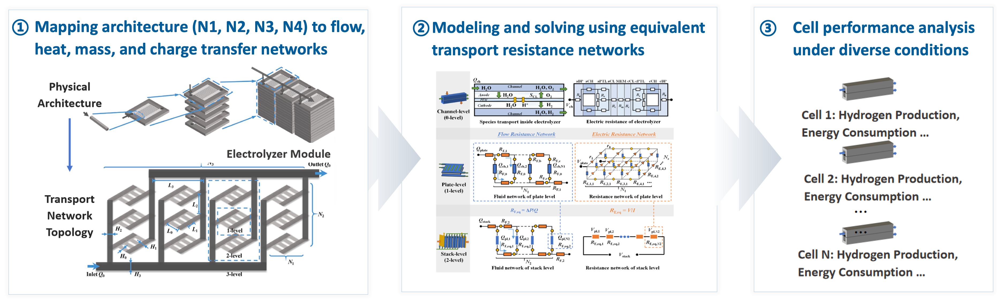
Cell-to-Module Modeling of Industrial-Scale Electrolyzer Clusters
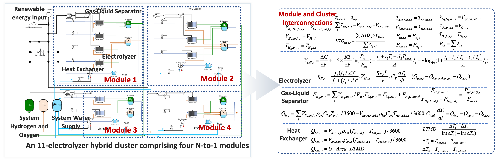
Non-Causal Modeling of N-in-1 Electrolyzer Modules
2. Intelligent Scheduling of Multi-Electrolyzer Systems
In large-scale distributed energy systems, multiple electrolyzers must be coordinated to achieve optimal hydrogen production dispatch. We propose a multi-timescale rolling optimization approach to meet real-time operational demands, providing a new solution for large-scale green hydrogen production with high penetration of wind and solar energy.
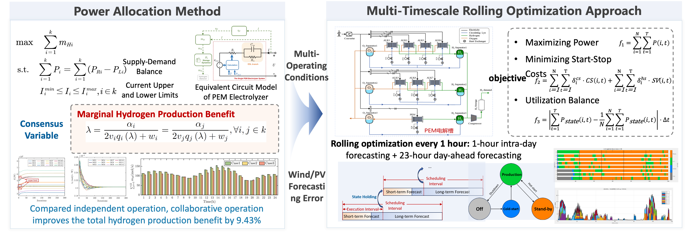
Intelligent Scheduling of Multi-Electrolyzer Systems under Multi-State Operation
3. Day-Ahead Optimal Scheduling
For electricity-hydrogen coupled energy systems, we investigate the day-ahead optimal scheduling problem. We propose a multi-learning rate reinforcement learning based day-ahead scheduling method. We further extend the problem to day-ahead scheduling of virtual power plants (VPPs) and propose a distributed two-timescale multi-agent reinforcement learning framework based on local information to achieve wide-area energy storage scheduling, enabling the utilization of distributed electric and hydrogen storage for cost reduction and short-term peak load alleviation.
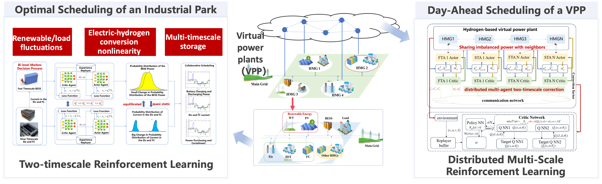
Optimal Scheduling of Electricity-Hydrogen Coupled Energy Systems
4. Peer-to-Peer Energy Trading
The market serves as a crucial instrument for allocating resources. Existing approaches usually rely on a central operator to collect and process trading information, which may cause heavy communication burden, limited scalability, and privacy leakage. In particular, sensitive information such as cost-function parameters may reveal individual preferences and lead to unfair market competition. Therefore, our objective is to develop fully distributed market-clearing algorithms for fast, scalable, and trustworthy P2P energy trading. For trading in distribution networks with heterogeneous VPP aggregators, we propose a privacy-preserving fully distributed market-clearing algorithm with state perturbation and channel attenuation and an ADMM-based market-clearing algorithm, supporting efficient VPP interaction for fast and secure optimal market clearing.
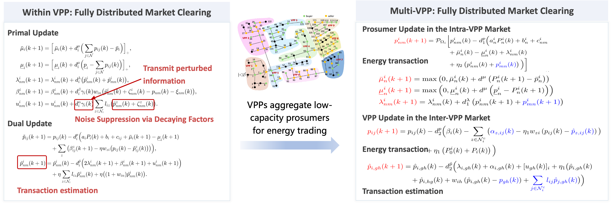
Energy trading among heterogeneous VPPs
5. Simulation Platform
In terms of platform development, we developed and built an electricity–hydrogen integrated energy system simulation platform. The platform supports key equipment simulation, system balance analysis, coordinated scheduling, and optimal control. It also provides dedicated support for the operation simulation of typical industrial electrolyzer clusters. At present, we have completed the development of a web-based electricity–hydrogen coupled energy system simulation platform. With the project management function, users can log in through web pages on different devices and update projects online. The platform enables simulation and visualization of real energy systems under different scenarios and resource configurations. We also developed electrolyzer simulation and coordinated scheduling modules. For actual N-in-1 alkaline electrolyzer modules, such as four-to-one and three-to-one systems, as well as PEM electrolyzer modules, the platform supports parameter fitting, model calibration, and steady-state and dynamic simulation. It also realizes day-ahead and intra-day coordinated scheduling of electrolyzer clusters and hydrogen storage tanks.
Large-scale electricity-hydrogen coupled energy systems represent the next generation of integrated energy networks that require the tight coordination of diverse physical modules and control technologies to achieve stability, performance, reliability, and efficiency in dealing with the stochastic nature of distributed power sources. From the perspective of system operation and large-scale scheduling, we simultaneously construct a "source-grid-load-storage-hydrogen" multi-dimensional collaborative decision-making framework. Through a visual interface for node topology and parameter configuration, and by employing simultaneous equation methods with solvers such as Ipopt, the platform integrates multi-time-scale strategies—spanning day-ahead, intra-day, and steady-state optimizations. This enables us to optimize the power allocation for heterogeneous electrolyzer clusters and multi-type energy storage systems in real time, supporting operation monitoring and second-level dynamic simulation. The related research achievements have been successfully applied to multiple major national demonstration projects.

|

|
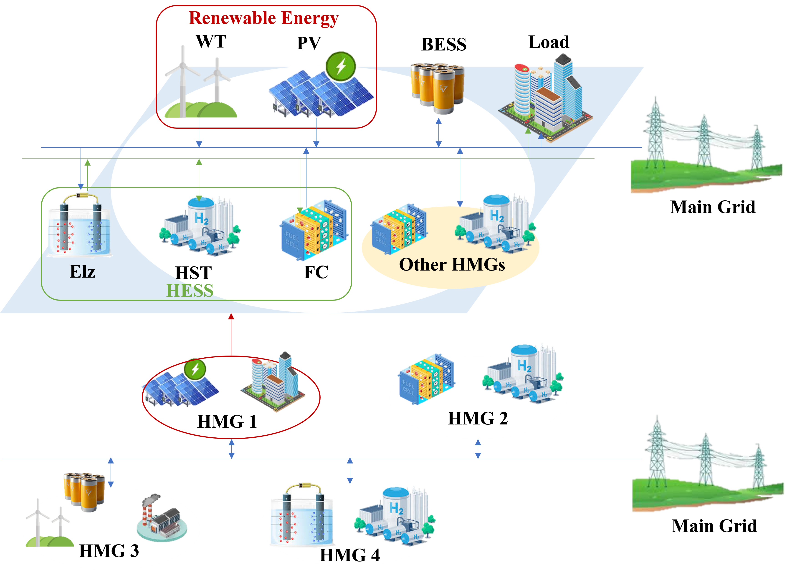 |
| Electricity-hydrogen coupled simulation platform | Dynamic simulation of electricity-hydrogen system | Multi-VPPs framework architecture |
Part III. Autonomous Intelligent Systems
1. Cooperative Localization and Perception
1.1 2D LiDAR SLAM
Simultaneous localization and mapping is one of the fundamental capabilities for autonomous systems operating in unknown environments. Our research focuses on cooperative exploration and mapping using multiple mobile robots equipped with 2D LiDAR sensors. By integrating frontier-based exploration, sampling-based target generation, task allocation, and real-time map fusion, the system enables robots to efficiently explore unknown spaces, construct consistent environmental maps, and improve coverage performance through cooperation. This research provides practical solutions for indoor service robots, inspection robots, search-and-rescue systems, and other applications where reliable localization and rapid environmental understanding are required.

|

|
| Multi-robot cooperative exploration and mapping process | Multi-robot exploration coverage comparison experiment |
1.2 3D LiDAR SLAM
Three-dimensional LiDAR SLAM plays an important role in autonomous navigation, large-scale mapping, and environmental reconstruction. Our research aims to improve the accuracy, robustness, and scalability of LiDAR-based localization and mapping in complex environments. The system incorporates global descriptor-based place recognition, loop closure detection, point cloud registration, and backend optimization to reduce accumulated drift and enhance mapping consistency. For multi-robot scenarios, we further investigate centralized map association and inter-map transformation estimation, enabling efficient construction of large-scale point cloud maps in underground garages, outdoor campuses, and other challenging environments. These studies support autonomous driving, robotic inspection, digital twin construction, and intelligent infrastructure management.

|

|
| Laser mapping and trajectory estimation in underground garage | True loop closure detection and false loop rejection |

|

|
| Multi-robot 3D mapping in outdoor campus | Multi-robot 3D mapping (view 2) |
1.3 Dynamic Semantic Visual SLAM
Visual SLAM systems often suffer from performance degradation in dynamic environments, where moving objects may introduce unstable features and ghosting artifacts in the reconstructed map. Our research focuses on dynamic semantic visual SLAM by combining lightweight semantic segmentation, geometric constraints, and robust feature selection. The system can distinguish static structures from dynamic objects, improve camera pose estimation, and reconstruct dense static maps with higher accuracy and real-time performance. This direction is closely related to mobile robots, autonomous vehicles, human-robot coexistence, and intelligent perception in unstructured environments.

|
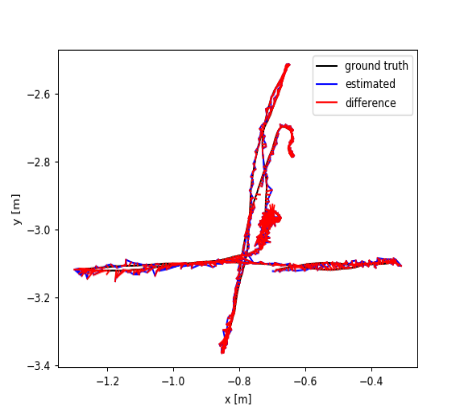 |
| Robust localization and mapping in dynamic scenes | Comparison with ORB-SLAM3: ghosting elimination |
1.4 Multi-Robot SLAM
Multi-robot SLAM extends conventional single-robot localization and mapping by allowing multiple agents to collaboratively perceive, explore, and reconstruct large-scale environments. Our research focuses on dense map merging, inter-robot pose estimation, and cooperative environmental reconstruction without relying on predefined initial poses. By fusing rendering-based image information with geometric features, the system improves the accuracy and robustness of map alignment across different robots. This research is particularly useful for large-area exploration, underground space inspection, disaster response, warehouse automation, and other scenarios where a single robot is limited by sensing range, computation, or operating time.

|

|
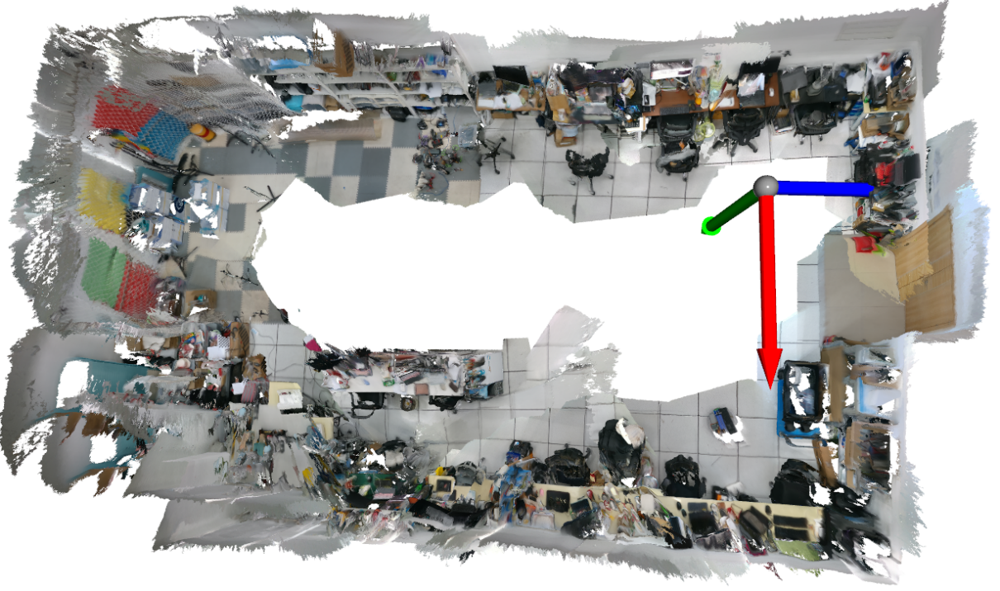 |

|

|
|
| Multi-robot dense map fusion (view 1) | Multi-robot dense map fusion (view 3) | Multi-robot dense map fusion result |
| Multi-robot dense map fusion (view 2) | Multi-robot dense map fusion (view 4) |
2. Collaborative Planning
2.1 Formation Control
2.1.1 Behavior-Based Formation Control
Formation control is a key problem in multi-robot coordination, enabling a group of robots to move cooperatively while maintaining desired spatial relationships. Our research investigates behavior-based formation control methods for mobile robots with nonholonomic constraints. Robot motion is decomposed into formation keeping, goal seeking, and collision avoidance behaviors, allowing the team to pass through obstacle-rich environments, maintain stable formations, and autonomously switch formation patterns according to environmental conditions. This direction provides fundamental support for cooperative transportation, patrol, surveillance, search-and-rescue, and swarm robotic systems.

|

|
| Gazebo simulation: multi-robot formation control | Real-world experiment (Mecanum wheel robot platform) |
2.1.2 Multi-Robot Formation Control Based on Artificial Potential Field and Fuzzy Control
Artificial potential field methods provide an intuitive framework for robot motion planning and obstacle avoidance, but traditional approaches may suffer from local minima and poor adaptability in complex environments. Our research combines artificial potential fields with fuzzy control to enhance the flexibility and robustness of multi-robot formation control. The method enables robots to maintain coordinated motion, avoid obstacles, optimize movement paths, and reduce the influence of local minimum problems. Real-world experiments on mobile robot platforms demonstrate the feasibility of the proposed approach for practical cooperative control tasks.

|

|
| Multi-robot path planning and formation control simulation | Real-world experiment (Mecanum wheel robot platform) |
2.2 Autonomous Decision-Making and Planning
2.2.1 End-to-End Navigation (Static Unknown Scenes)
End-to-end navigation aims to enable robots to make motion decisions directly from sensor observations without relying on complete prior maps. Our research investigates reinforcement learning-based navigation methods for both single-agent and multi-agent systems in static unknown environments. For single-agent navigation, radar-based map-free learning is used to improve adaptability in unexplored scenes. For multi-agent navigation, artificial potential fields are integrated with reinforcement learning to support coordinated path planning and efficient policy learning. This research contributes to autonomous navigation in unknown indoor environments, robot exploration, logistics transportation, and service robotics.
|
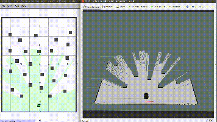 |
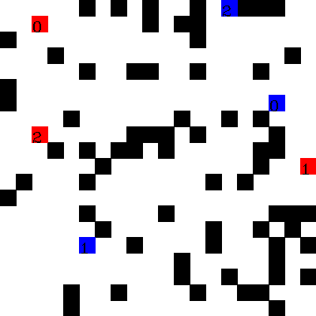 |
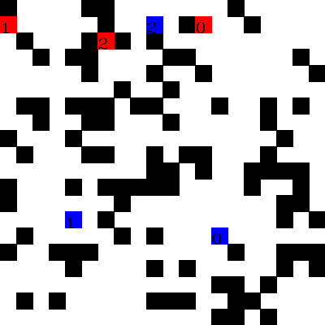 |
| Single-agent radar-based map-free RL navigation | Multi-agent APF + RL path planning | Multi-agent cooperative navigation experiment |
2.2.2 End-to-End Navigation (Dynamic Pedestrian Scenes)
Autonomous navigation in human-populated environments requires robots to understand pedestrian motion, predict potential interactions, and make socially compliant decisions in real time. Our research focuses on end-to-end social navigation in dynamic pedestrian scenes by integrating graph attention networks with reinforcement learning. The system jointly models pedestrian states, interaction relationships, and collision avoidance decisions, enabling robots to navigate safely and efficiently in open fields and real-world dynamic environments. This direction is closely related to service robots, delivery robots, autonomous patrol platforms, and human-robot coexistence in public spaces.

|

|

|
| Open field: dynamic pedestrian navigation simulation | Real platform: dynamic pedestrian navigation test | LiDAR pedestrian detection effect |
2.3 Multi-Robot Path Planning
2.3.1 Conflict-Based Search
Multi-robot path planning aims to generate collision-free and efficient paths for multiple robots operating in a shared environment. Our research investigates hierarchical conflict-based search methods that progressively introduce constraints to resolve conflicts among robot paths. The framework can be extended to heterogeneous multi-robot systems with different motion models, body sizes, and task requirements. By explicitly modeling inter-robot conflicts and searching for feasible path combinations, this approach provides reliable planning solutions for warehouse logistics, automated transportation, multi-robot inspection, and cooperative task execution.

|
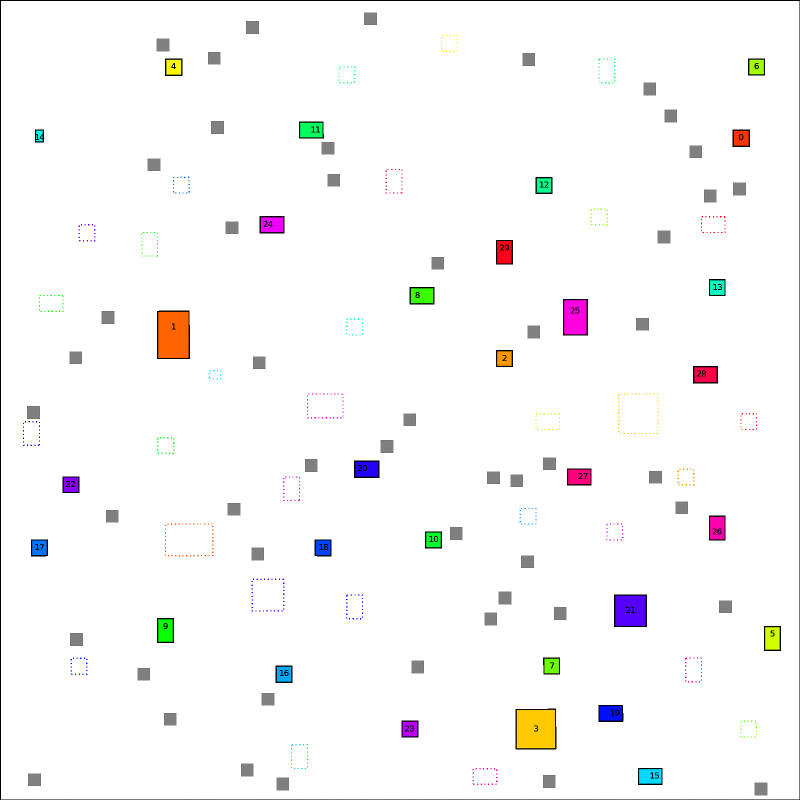 |

|
| Homogeneous multi-robot path planning | Heterogeneous multi-robot path planning | Conflict-based search method schematic |
2.3.2 Reinforcement Learning Methods
Reinforcement learning provides a promising framework for multi-robot path planning in complex and uncertain environments. Our research focuses on learning-based coordination strategies that allow robots to make decentralized or partially decentralized decisions under conflict constraints. By incorporating selective communication mechanisms and hierarchical coordination, the system can model complex interaction relationships among robots and improve path efficiency, success rate, and adaptability in typical conflict scenarios such as head-on conflicts, blocking conflicts, and dense traffic situations. This research supports scalable multi-robot coordination in intelligent warehouses, autonomous transportation, and swarm robotic systems.
|
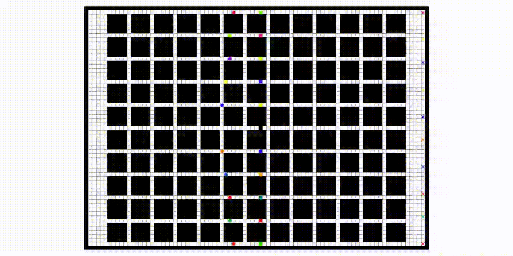 |

|
| Head-on conflict scenario: RL multi-robot path planning | Blocking conflict scenario: RL multi-robot path planning |

|
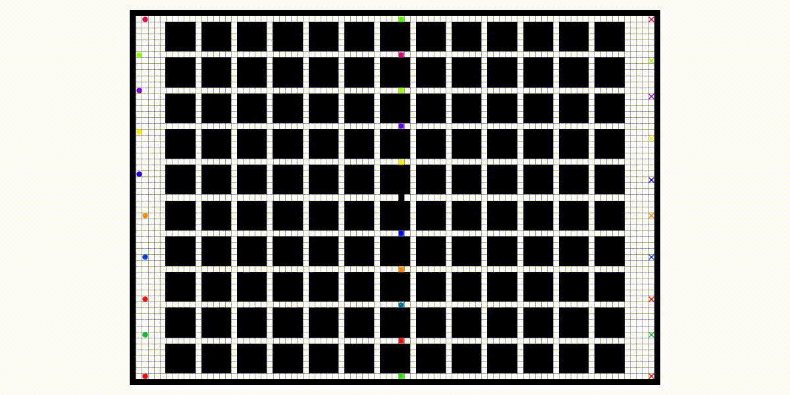 |
| Typical conflict scenario path planning (example 3) | Typical conflict scenario path planning (example 4) |
3. Simulation Platform
3.1 Multi-Agent Cooperative Control Simulation Software
Multi-agent cooperative control requires systematic simulation tools to evaluate coordination algorithms under different environmental conditions, robot models, and task settings. Our simulation software is designed to support the modeling, visualization, and testing of cooperative control strategies for multiple agents. It enables researchers to analyze formation behaviors, motion coordination, collision avoidance, and task execution processes in a controllable virtual environment. This platform helps bridge the gap between theoretical algorithm design and real-world robotic implementation.

|

|
| Multi-agent cooperative control simulation (demo 1) | Multi-agent cooperative control simulation (demo 2) |
3.2 Unity 3D-Based Reinforcement Learning Training and Validation Platform
Reinforcement learning for robotics requires realistic and flexible simulation environments for policy training, evaluation, and transfer. Our Unity 3D-based platform provides a visual and interactive environment for reinforcement learning-driven navigation and decision-making. The platform supports scene construction, sensor simulation, agent-environment interaction, policy training, and performance validation. It can be used to test navigation algorithms, multi-agent coordination strategies, and autonomous decision-making methods before deployment on physical robotic systems. This research contributes to efficient algorithm development and safer real-world implementation of intelligent autonomous systems.

|

|
| Unity 3D RL training and validation (demo 1) | Unity 3D RL training and validation (demo 2) |